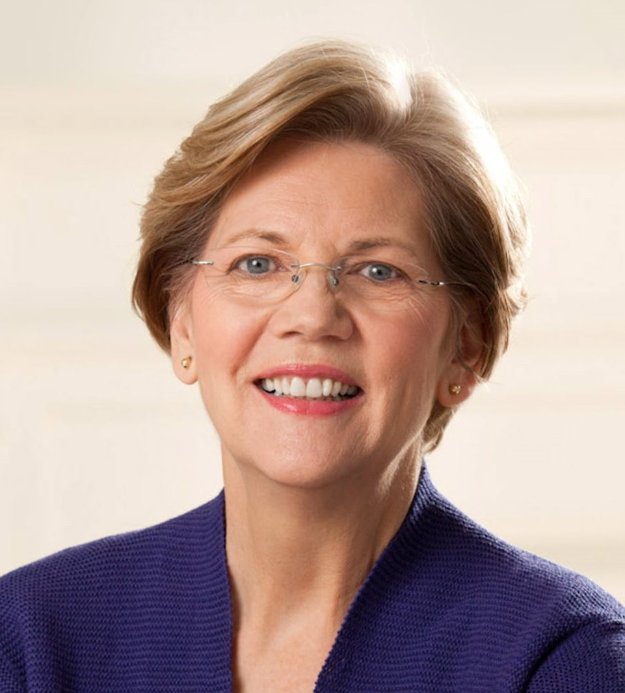

- Name: Elizabeth Warren
- Political Party: Democratic
- Age: 69
- Date of Birth: June 22, 1949
- Current Position: Senior United States Senator of Massachusetts
- Platform:
- Abolish Capital Punishment
- End Cash Bail
- Eliminate Mandatory Minimum Sentences
- Eliminate Private Prisons
- Mandate Paper Ballots
- Raise the federal minimum wage to $15/hour
- Study reparations
- Federal funds to build more houses
- Bring back Glass-Steagall
- Raise taxes on the wealthy, create new social programs
- Support broad paid family and medical leave plans
- College should be free
- Cancel Some Student Debt
- Unlimited spending should not be allowed in politics
- The Electoral College should be eliminated
- Restoring voting rights after prison
- Ban fracking everywhere
- Impose government regulations
- Break up agribusiness
- Pay farmers to adopt climate-friendly practices
- Support a voluntary buy-back program on assault weapons
- In favor of universal background checks
- Few limits on Abortions, if any
- All in on Medicare for All
- Support drug price negotiation, reference pricing and allowing the U.S. government to make generic
- Oppose Medicare for All, but would expand coverage
- Citizenship for Dreamers
- Repeal the Illegal Entry statute
- Don’t support additional wall funding
- Legalize Marijuana
- Slash defense budget
- Bring the troops home
- Boost taxes on wealthy Americans
- Raise corporate taxes, but keep rates lower than before 2017
- CEOs should be be fined or jailed over privacy flaps
- Break up Tech Competition and Antitrusts
- Oppose joining CPTPP or opposed TPP
- Use tariffs to crack down on certain countries
- Demand changes to USMCA
- Description: Elizabeth Ann Warren (née Herring; born June 22, 1949) is an American politician and former academic serving as the senior United States Senator from Massachusetts since 2013. She was formerly a law school professor specializing in bankruptcy law. A member of the Democratic Party and a progressive, Warren has focused on consumer protection, economic opportunity, and the social safety net while in the Senate.
Warren is a graduate of the University of Houston and Rutgers Law School and has taught law at several universities, including the University of Houston, the University of Texas at Austin, the University of Pennsylvania, and Harvard University. She was one of the most influential professors in the field of commercial law before beginning her political career. She has authored five and coauthored six books.
Warren's first foray into public policy began in 1995 when she worked to oppose what eventually became a 2005 act restricting bankruptcy access for individuals. Her national profile grew during the late 2000s following her forceful public stances in favor of more stringent banking regulations after the 2007–08 financial crisis. She served as chair of the Congressional Oversight Panel of the Troubled Asset Relief Program and was instrumental in creating the Consumer Financial Protection Bureau, of which she served as the first Special Advisor under President Obama.
In November 2012, Warren won the U.S. Senate election in Massachusetts, defeating incumbent Republican Scott Brown and becoming the first female Senator from Massachusetts. She was assigned to the Senate Special Committee on Aging; the Banking, Housing, and Urban Affairs Committee; and the Health, Education, Labor, and Pensions Committee. Warren won reelection by a wide margin in 2018, defeating Republican nominee Geoff Diehl. On February 9, 2019, at a rally in Lawrence, Massachusetts, Warren announced her candidacy in the 2020 United States presidential election.[2]